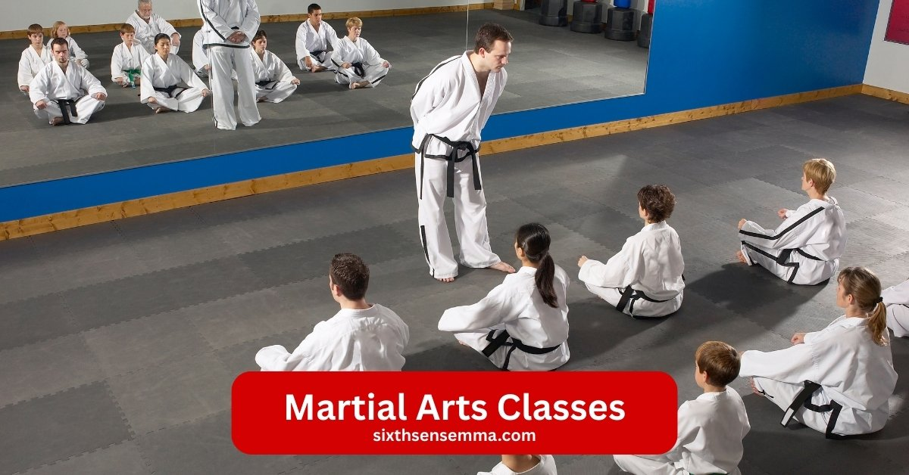

Premier Martial Arts Classes for Self Defense and Valuable Life Skills

Martial Arts Classes at Sixth Sense MMA are designed to help you build strength, improve flexibility, and boost self confidence while learning powerful techniques. Our expert trainers create a friendly and motivating environment, guiding you in every session and pushing you closer to your goals, whether you’re a complete beginner or looking to sharpen your existing skills. At Sixth Sense MMA, we combine traditional training methods with modern fitness strategies to make each class fun, challenging, and results driven helping you stay fit, focused, and empowered.
Discover the Best Martial Arts Training Near You
Welcome to martial arts classes at Sixth Sense! Our premier martial arts programs bring top notch martial arts to everyone. Located at our martial arts academy, we offer martial arts training for children and adults. Whether you’re new or an advanced student, our classes near you provide self defense skills and personal development. From ages 5 7 to adults, every martial arts journey starts here. Explore japanese martial art styles like brazilian jiu jitsu and karate classes with us. Our sensei and martial arts instructors create a safe and supportive environment for all.
Why Choose Premier Martial Arts for Your Journey
Choose Sixth Sense for the best martial arts experience, where skilled martial arts instructors provide expert instruction in every class. You’ll learn practical self defense techniques through krav maga and taekwondo. We offer a supportive environment that builds self confidence and life skills. Whether you’re in an adult martial arts class or a kids martial arts session, our martial arts program focuses on personal goals. Join us to empower our students with high quality martial arts training.
Building Strength, Discipline, and Confidence
At Sixth Sense, our martial arts classes are designed to strengthen your body and mind. Through martial arts training, you’ll gain physical fitness with kickboxing and stick fighting. Mental discipline grows as you master self defense moves like jiu jitsu. Our non competitive environment helps build unwavering confidence, especially for ages 8 12 and advanced students. With exceptional training, you’ll move from white belt to black belt, enhancing skills and confidence along your arts journey.
Benefits of Enrolling in Martial Arts Classes
- Physical Fitness and Health Improvements Through Martial Arts Training
- Mental and Emotional Growth with Self Defense Skills
- Developing Valuable Life Skills and Social Connections
Physical Fitness and Health Improvements Through Martial Arts Training
Joining martial arts classes brings amazing health benefits. Experience full body workouts that enhance strength, flexibility, endurance, and cardiovascular health through our dynamic martial arts classes. Our martial arts training includes moves from brazilian jiu jitsu and kickboxing, perfect for all ages and skill levels. Whether you’re an adult or a child from ages 5 7, you’ll build physical fitness at our martial arts academy. Even advanced students can improve their existing skills in a supportive environment with expert martial arts instructors.
Mental and Emotional Growth with Self Defense Skills
Martial arts classes do more than strengthen your body they boost your mind. Gain mental clarity, emotional resilience, and the confidence to handle high pressure situations with our self defense focused training. Learning self defense skills through krav maga and taekwondo helps build self confidence. Our dojo offers a safe space for kids martial arts and adult martial arts classes, fostering personal development. This martial arts journey empowers our students with life skills and a strong sense of self discovery.
Developing Valuable Life Skills and Social Connections
Enrolling in martial arts classes teaches you skills that last a lifetime. Learn discipline, respect, and teamwork while building meaningful connections within our supportive martial arts community. Our martial arts program includes karate classes and jiu jitsu for children and adults. The non competitive environment helps ages 8 12 grow, while adult martial arts classes encourage personal goals. With high quality martial arts training from our sensei, you’ll gain valuable life skills and form friendships at every class.
Explore Our Diverse Martial Arts Programs
At Sixth Sense Martial Arts Academy, we offer a range of martial arts classes to suit different needs and skill levels. Check out this quick table for details on our main program types, including age groups and key focuses, to help you pick the right martial arts training for your arts journey.
| Program Type | Age Group | Key Focus Areas |
|---|---|---|
| Little Champions | Ages 5-7 | Basic self-defense skills, coordination, and self-confidence building through fun and engaging activities like simple karate classes. |
| Rising Champions | Ages 8-12 | Valuable life skills such as teamwork and discipline, with martial arts techniques from taekwondo and jiu-jitsu in a non-competitive environment. |
| Teens Program | Teens | Leadership and self-discipline, combining self-defense with kickboxing and grappling for personal development and energy channeling. |
| Adult Martial Arts | Adults | Physical fitness, mental resilience, and real-world self defense through Brazilian Jiu-Jitsu, Krav Maga, and high-quality martial arts for beginners to advanced students. |
| Family Programs | All Ages | Bonding and shared growth with mixed classes for all ages, focusing on empowerment and supportive environment led by expert martial arts instructors. |
Adult Martial Arts Classes Tailored for Real World Self Defense
High Quality Martial Arts Training for Beginners and Advanced Students
Our martial arts classes provide top-notch training for adults at all levels.Whether you’re a beginner or an advanced student, our martial arts academy provides high quality martial arts training. Expert martial arts instructors guide you through brazilian jiu jitsu and krav maga, perfect for self defense skills. At our dojo, adults can start their martial arts journey, building physical fitness and personal development. Classes for all ages ensure a supportive environment for everyone to grow.
Mastering Self Defense Techniques in a Supportive Dojo Environment
Learning self-defense becomes easier in our martial arts classes. Mastering self defense techniques in a supportive dojo environment helps adults gain self confidence. Our martial arts program includes karate classes and taekwondo, taught by skilled sensei. This safe space allows kids martial arts and adult martial arts students to practice practical techniques. From ages 8 12 to adults, our non competitive setting fosters life skills and empowers our students with real world readiness.
Adult Martial Arts Programs Focused on Fitness and Mental Resilience
Our adult martial arts classes focus on more than just fighting. Adult martial arts programs are designed to boost fitness and mental resilience through martial arts training. Activities like kickboxing and jiu jitsu enhance cardiovascular health and personal goals. At our martial arts academy, advanced students improve their existing skills while building self discovery. This high quality martial arts approach creates a strong foundation for a balanced arts journey.
Kids Martial Arts Classes Foster and Empower Growth
Little Champions: Intro to Martial Arts for Young Beginners
Our martial arts classes welcome young kids with the Little Champions program. This intro to martial arts for young beginners starts at ages 5 7, offering a safe and supportive environment. At our martial arts academy, martial arts instructors teach basic self defense skills through karate classes and brazilian jiu jitsu. This martial arts training builds physical fitness and self confidence, setting the foundation for a lifelong martial arts journey.
Rising Champions: Developing Valuable Life Skills Through Playful Training
Rising Champions program helps kids aged 8 12 grow through playful training. Our martial arts classes focus on developing valuable life skills like discipline and teamwork. Martial arts training includes taekwondo and jiu jitsu, led by expert sensei in a non competitive environment. This kids martial arts session at our dojo enhances personal development and empowers our students with self discovery and social connections.
Tiny Champions Program for Building Early Confidence and Coordination
The Tiny Champions program is perfect for the youngest learners, focusing on early confidence and coordination. Our martial arts classes use high quality martial arts training with activities like kickboxing and krav maga. At our martial arts academy, children and adults benefit from a supportive environment that boosts self defense skills. This martial arts program helps kids start their arts journey with fun, engaging exercises guided by martial arts instructors.
Teen Martial Arts Classes for Leadership and Self Discipline
Teens Program: Combining Self Defense with Life Skills Development
Our martial arts classes offer a special teens program that blends self defense with life skills development. At our martial arts academy, teenagers learn practical techniques like brazilian jiu jitsu and krav maga from expert martial arts instructors. This martial arts training builds self confidence and personal development in a supportive environment. The dojo fosters discipline and teamwork, empowering our students aged 8 12 and beyond with valuable life skills for their martial arts journey.
Kickboxing and Grappling Sessions to Channel Energy Positively
Teens can channel their energy positively with our kickboxing and grappling sessions. These martial arts classes at our academy develop physical fitness and build self-defense skills. Our sensei guide students through high quality martial arts training, combining taekwondo and jiu jitsu. This non competitive environment helps advanced students improve their existing skills, offering a safe space for personal goals and self discovery within our martial arts program.
Specialized Martial Arts Styles and Influences
Japanese Martial Arts Influences in Our Curriculum
Our martial arts classes feature strong Japanese martial arts influences in our curriculum. At our martial arts academy, we draw from japanese martial art traditions like jiu jitsu and karate classes. Martial arts instructors blend these styles into our martial arts program for children and adults. This approach builds self defense skills and personal development, offering a supportive environment for all ages, from ages 5 7 to advanced students, on their martial arts journey.
Blending Traditional Techniques with Modern Self Defense Strategies
We excel at blending traditional techniques with modern self defense strategies in our martial arts classes. Our martial arts training combines brazilian jiu jitsu with krav maga, guided by expert sensei. This high quality martial arts approach enhances self confidence and physical fitness. At our dojo, kids martial arts and adult martial arts students learn practical techniques, empowering our students with life skills in a safe and non competitive environment.
Exploring Karate Classes and Their Role in Comprehensive Training
Exploring karate classes reveals their role in comprehensive training within our martial arts classes. Our martial arts academy offers karate classes that boost self defense skills and discipline. Martial arts instructors provide exceptional training for ages 8 12 and adults, fostering personal goals. This martial arts program integrates karate with taekwondo, creating a balanced arts journey in a supportive environment for all levels of martial arts training.
Our Core Focus Brazilian Jiu Jitsu Classes
What is Brazilian Jiu Jitsu?
At our martial arts classes, you can master Brazilian Jiu Jitsu (BJJ), a martial art specializing in ground fighting and submission techniques, ideal for effective self defense. This martial arts training is perfect for kids martial arts and adult martial arts classes at our martial arts academy. Our sensei guide students through this japanese martial art, offering a supportive environment for all ages. Whether you’re new or an advanced student, BJJ builds self confidence and personal development through high quality martial arts training.
History and Origins of This Japanese Influenced Martial Art
Discover the roots of BJJ, derived from Japanese Jiu Jitsu and refined in Brazil, known for its practical and strategic approach. Our martial arts classes explore this rich history, blending it into our martial arts program for children and adults. At our dojo, martial arts instructors teach the evolution of this art, making it accessible for ages 5 7 to ages 8 12. This martial arts journey highlights how BJJ’s techniques enhance self defense skills and empower our students with valuable life skills.
Key Principles and Techniques in BJJ Training
Learn core BJJ techniques, including positional control, submissions, and escapes, designed to empower you in real world scenarios. Our martial arts classes focus on these skills, offered in our karate classes and jiu jitsu sessions. Martial arts training at Sixth Sense provides a safe space for adult martial arts and kids martial arts, fostering self discovery. With expert instruction, students of all ages in all classes learn practical self-defense techniques and enhance their existing skills in a non-competitive environment.
Why BJJ Stands Out as the Best Martial Arts for Practical Self Defense
Benefit from BJJ’s focus on leverage and technique, making it the go to martial art for practical, real world self defense. Our martial arts classes stand out with this approach, ideal for those seeking the best martial arts experience. Whether in an adult martial arts class or a kids martial arts session, BJJ enhances self defense skills. Our martial arts instructors at the dojo ensure high quality martial arts training, helping students achieve personal goals through this effective martial arts program.
Ground Fighting Mastery for Real World Scenarios
Develop expertise in ground fighting, equipping you with skills to manage and neutralize threats in close quarters situations. Our martial arts classes focus on this aspect of brazilian jiu jitsu, perfect for self defense classes. At our martial arts academy, kids martial arts and adult martial arts students learn these techniques from ages 5 7 onward. This training experience, led by our sensei, builds physical fitness and empowers our students in a supportive environment for real life safety.
Integrating BJJ with Other Styles Like Kickboxing
Enhance your skills with our integrated approach, combining BJJ’s grappling with kickboxing’s striking for a comprehensive self defense system. Our martial arts classes blend these styles, offered at our dojo for children and adults. Martial arts training includes taekwondo and krav maga alongside jiu jitsu, creating a balanced arts journey. This high quality martial arts program benefits ages 8 12 and advanced students, fostering skills and confidence under expert martial arts instructors in a safe and supportive environment.
Start the Next Step in Your Martial Arts Journey.
Request Information and Get Started
Ready to begin your martial arts classes at Sixth Sense Martial Arts Academy? Contact us today to learn about our martial arts programs, including Brazilian Jiu Jitsu, kickboxing, karate classes, and more. Our team is here to help you find the perfect classes for all ages, whether you’re exploring kids martial arts, adult martial arts, or family friendly programs. Visit our website at sixthsensemma.com or email us at to request details and start your arts journey.
Unlock Your Potential in Self-Defense and Beyond
Step into a fun and engaging martial arts journey that builds self confidence, physical fitness, and valuable life skills. At Sixth Sense, our premier martial arts programs, including jiu jitsu, kickboxing, and ninja classes, empower advanced students and beginners alike. From ages 5 7 to ages 8 12 and beyond, our high quality martial arts training fosters empowerment, self defense skills, and personal development. Sign up for a FREE trial class today to experience the great balance of skills and confidence in a non competitive environment. Don’t wait learn self defense and start your training experience now!
FAQ's
The best martial art for beginners depends on personal goals and preferences. Brazilian Jiu-Jitsu (BJJ) is favored for its focus on technique, making it accessible for all. Karate is also a strong choice, emphasizing basic movements and self-discipline. It’s beneficial for beginners to try different classes to find what suits them best.
There is no age limit for starting martial arts! People of all ages can benefit from training. Many schools offer adult classes that cater to newcomers, allowing them to learn at their own pace and enjoy the physical and mental benefits of martial arts.
The cost of martial arts training varies by school, location, and class types. Many schools offer flexible pricing, including monthly memberships or per-class fees. It’s wise to explore different options to find a budget-friendly school that meets your needs.
Participation costs typically range from $100 to $150 per month for memberships, with per-class rates between $15 and $30. Annual memberships may be available for $800 to $1,200, often providing savings. Additionally, consider any extra fees for uniforms and equipment.
For your first day, wear comfortable athletic clothing. Most schools will provide a uniform (like a gi) for you to wear once you enroll, but you want to be ready to move in whatever you choose! Just check with the school beforehand to see if they have any specific requirements.
The time it takes to earn a belt varies widely based on the martial art and your dedication. Generally, it can range from 3 months to several years. Factors influencing this timeline include attendance, effort, and the specific belt progression system of the style you are learning.
Absolutely! Martial arts classes are intended for all fitness levels. Many schools offer beginner programs that help you gradually build your strength and flexibility, so don’t worry if you’re starting from scratch!
Train with us in Coppell
The first class is free. Shorts, a t-shirt and a water bottle. We lend the rest.
Book a free class